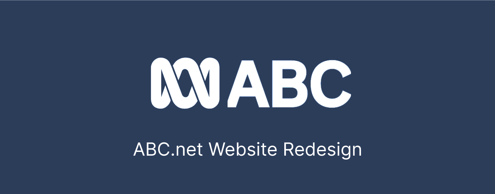
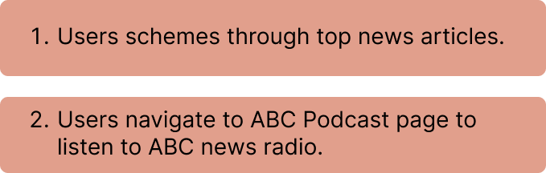
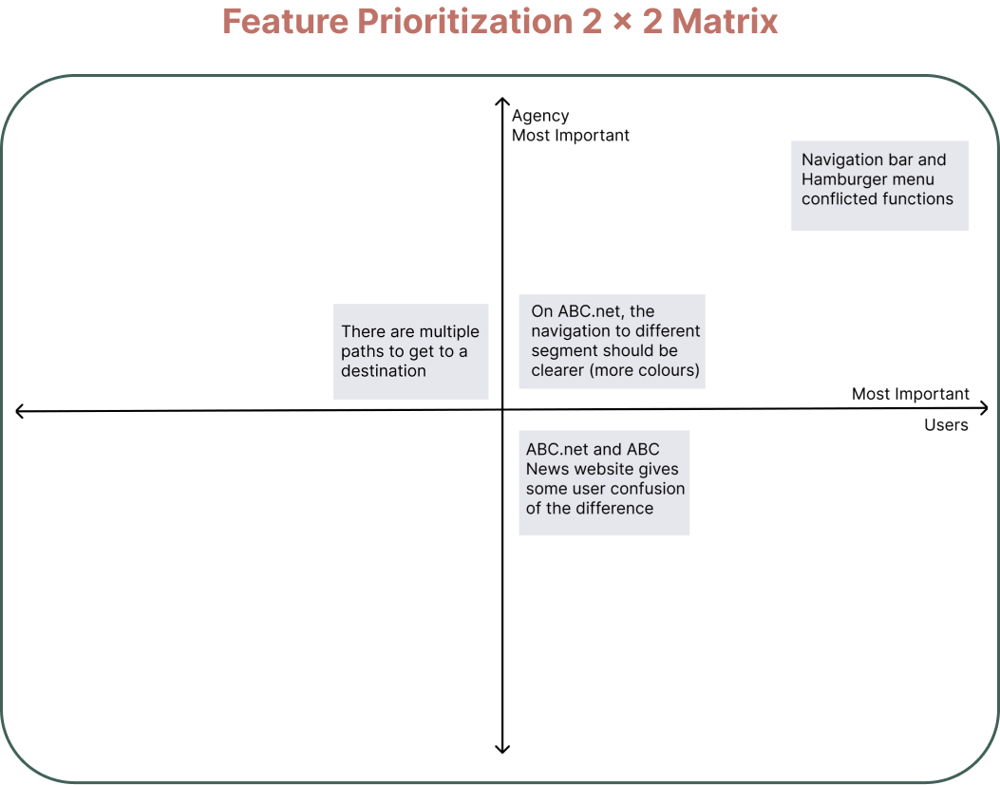
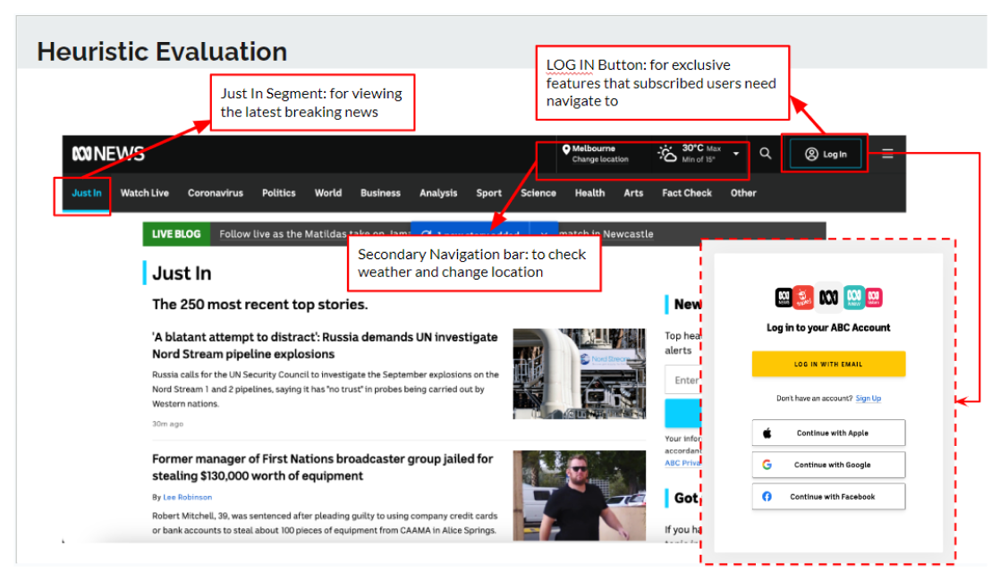
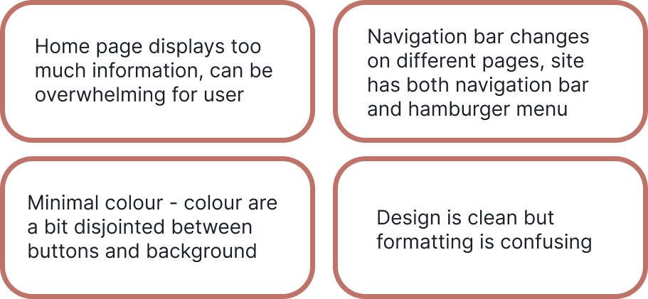
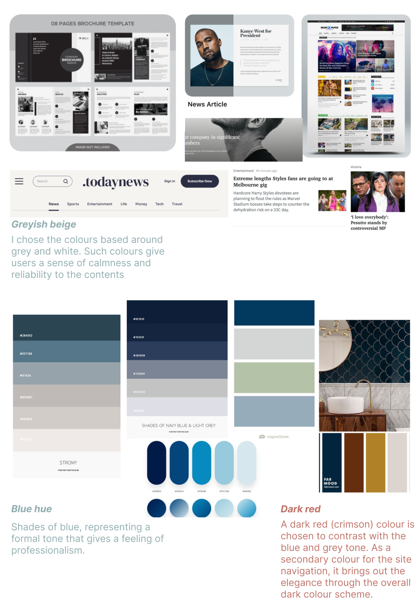

Research
Going into my research study, my goal was to understand what the users’ pain points was of the existing web navigation and webpage so that I can proceed to develop a more useful Responsive Web Design UI style system.
First, working in a group of three, we defined two user paths being:
Initially, working in a group of three, we spoke to nine ABC.net visitors via 1-1 interviews by testing the above two tasks. The focus group includes frequent users and first-time webpage browsers.
We summarized our user testing results and placed them into a Feature Prioritization Matrix below.
To measure the usability of user interface, I analysed the existing webpage’s navigation system via Heuristic Evaluation.
Concluding our user testing results and heuristic evaluation findings, I have narrowed down the key points that are to be made more user-friendly:
Here are my inspirational concepts of this redesign project.
